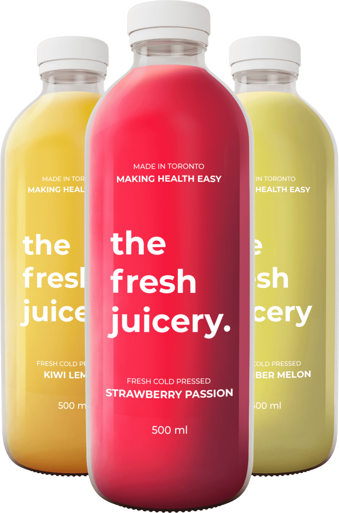
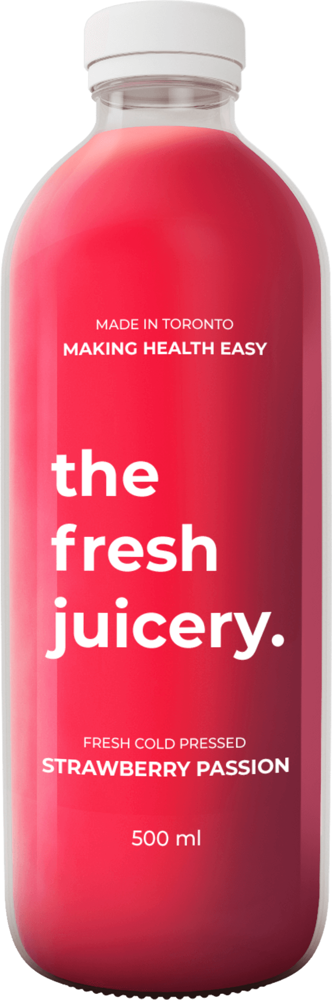

the fresh juicery.
explore our newest flavours

BERRIES
Strawberry Passion
Refreshing and bold, perfect for the day to day. Strawberry Passion is full of nutritions to help with those long work days. Start your day with some passion.
nutrition facts
| Calories 100 | |
| Total Fat 0.2 g | 0% |
| Saturated Fat 0.1 g | 1% |
| Trans Fat 0 g | |
| Cholesterol 0 mg | 0% |
| Sodium 4 mg | 0% |
| Potassium 160 mg | 5% |
| Total Carbohydrate 6 g | 2% |
| Dietary Fibre 0 g | 0% |
| Sugars 3 g | |
| Protein 0 g |